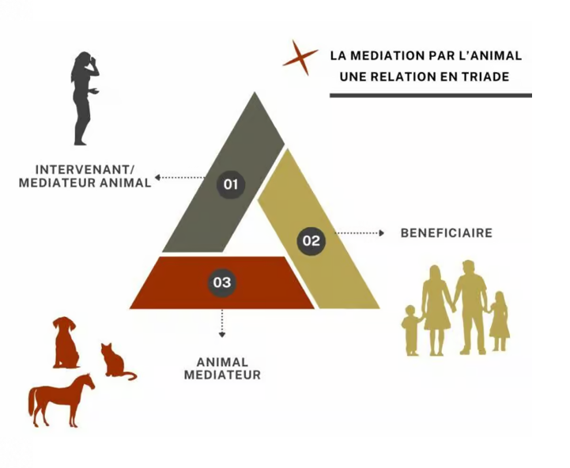

Une approche douce et bienveillante pour accompagner enfants,
adultes et personnes âgées grâce à la présence apaisante de l'animal.
C'est une méthode d'accompagnement — aussi appelée zoothérapie — qui utilise la présence d'un animal pour aider une personne à se sentir mieux sur le plan émotionnel, social ou physique.
On met en relation un enfant, un adulte ou une personne âgée avec un animal spécialement choisi et encadré. Le contact avec l'animal va créer un climat de confiance, de calme et de bien-être.

Confiance en soi, socialisation, gestion des émotions
Stress, anxiété, accompagnement de pathologies
Stimulation, lien affectif, mémoire, lutte contre l'isolement
EHPAD, IME, hôpitaux, structures spécialisées
Pourquoi l'animal est un médiateur si puissant ?
Des animaux sélectionnés, formés et bienveillants
Selon vos besoins et vos objectifs
C'est la forme la plus simple et accessible. Elle se déroule en petit groupe de 6 à 8 personnes.
Le but est de faire du bien et de créer du lien. On caresse l'animal, on joue avec lui, on passe un moment agréable. On cherche avant tout le bien-être immédiat.
Bien-être & lien socialC'est une forme plus encadrée et structurée, avec des objectifs thérapeutiques, éducatifs ou émotionnels précis.
Ces objectifs sont définis au départ par le médiateur, en lien avec l'équipe médicale ou la famille. On travaille sur des progrès à long terme.
Thérapeutique & suiviDes séances adaptées à vos besoins et à votre budget
💡 Première séance de découverte : contactez-moi pour que nous puissions échanger sur votre projet et les besoins de vos bénéficiaires.
Mon parcours face à la maladie a profondément renforcé mon désir d'accompagner les autres. La médiation animale s'est imposée à moi comme une approche naturelle pour créer du lien, apporter du réconfort et du bien-être.
Pour cela, j'ai suivi une formation spécialisée en médiation animale en juin 2025. J'interviens notamment en EHPAD pour contribuer au bien-être des résidents à travers des temps d'échange, de stimulation et de lien affectif.
MILO, mon partenaire Berger Australien Encore jeune, Milo commence un parcours de formation progressif à mes côtés. Il a tout à donner et tout à apprendre — tout comme nous, ensemble.
N'hésitez pas à me contacter pour en parler ensemble